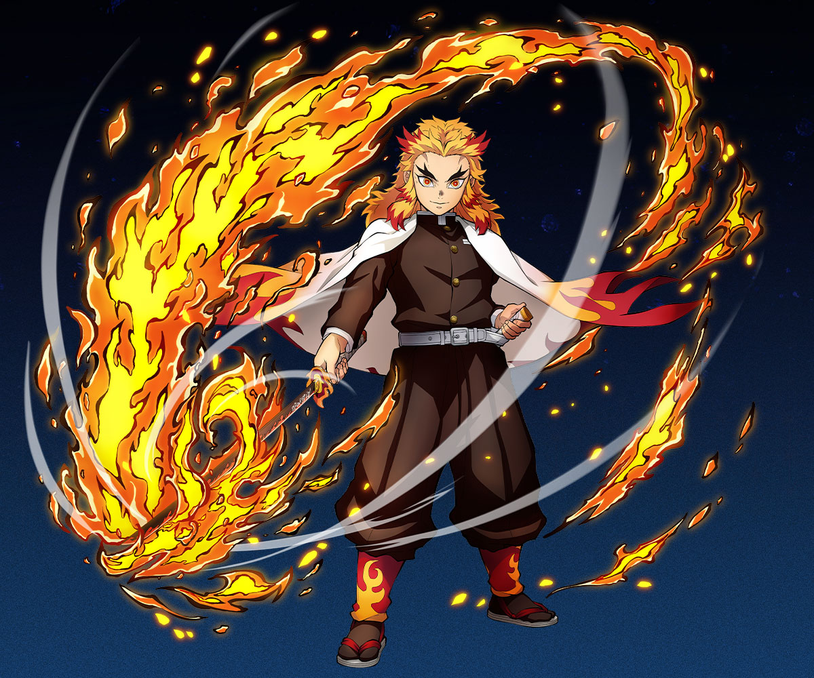
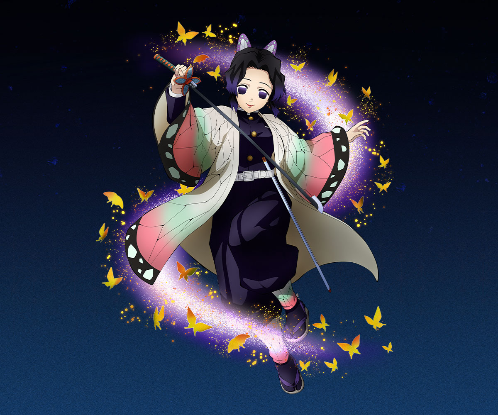
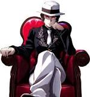
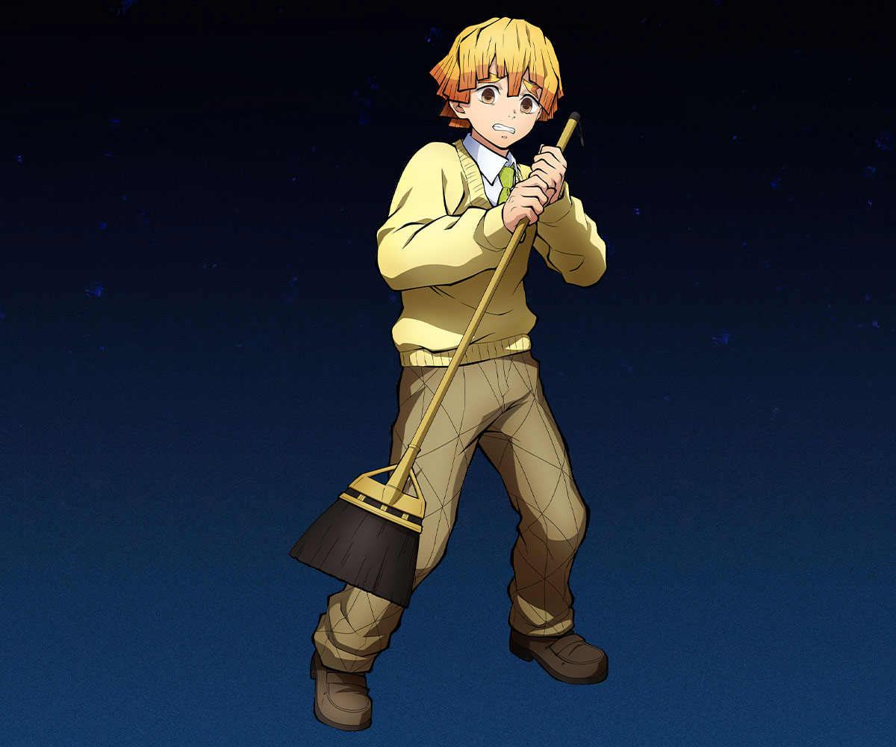
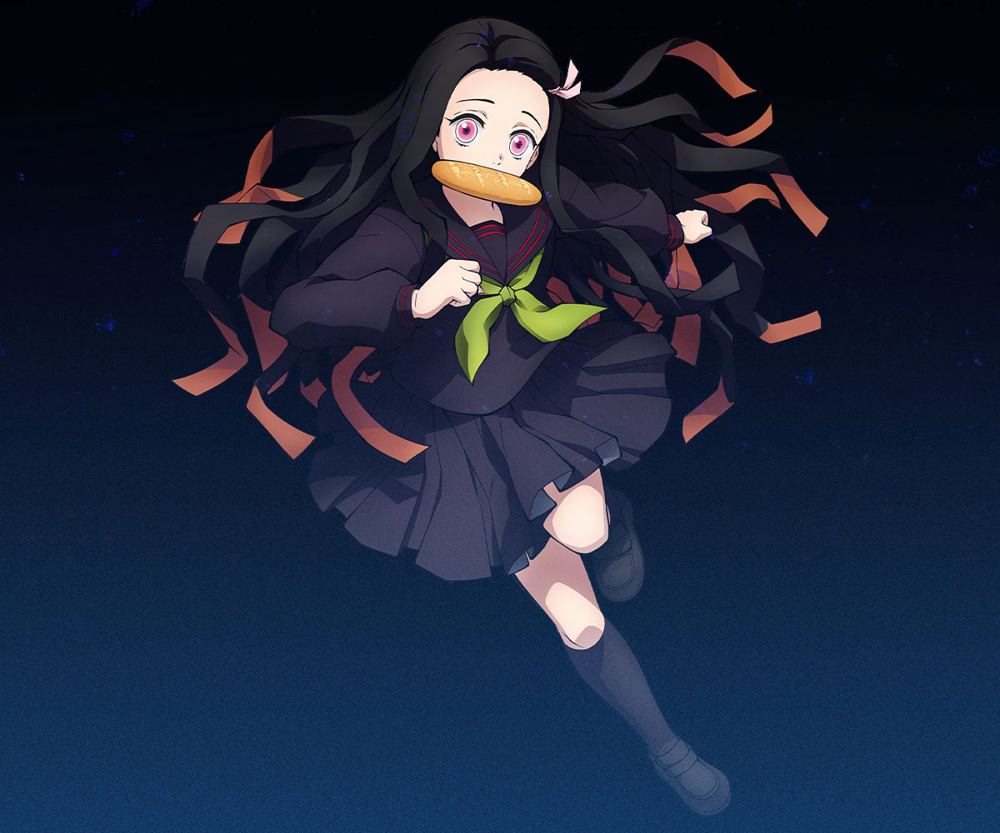
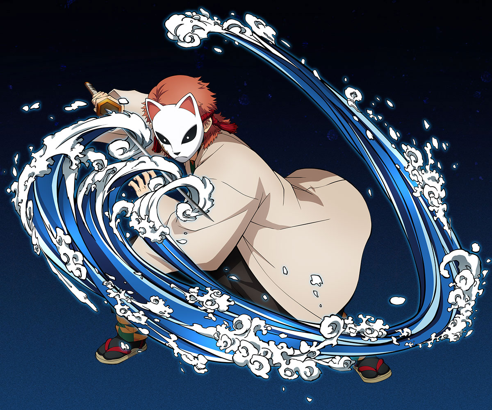
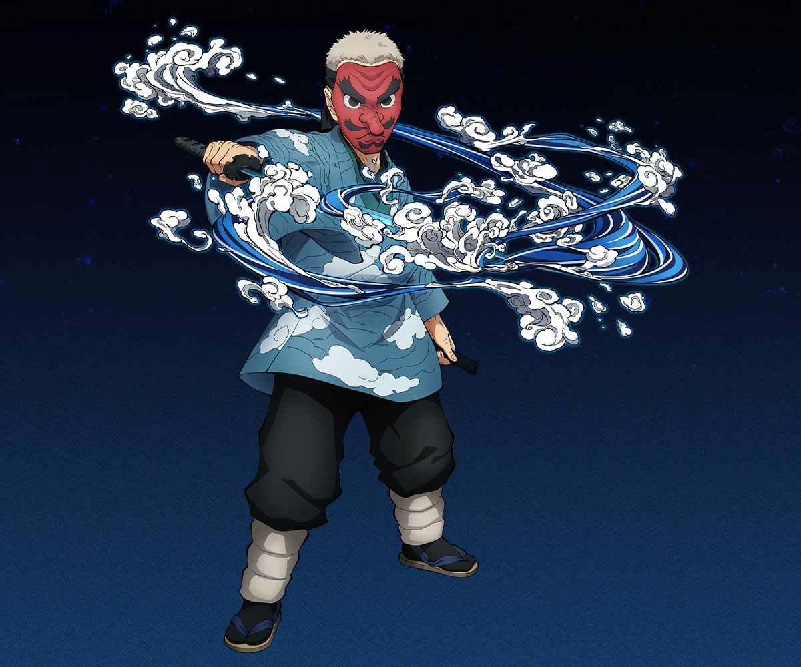
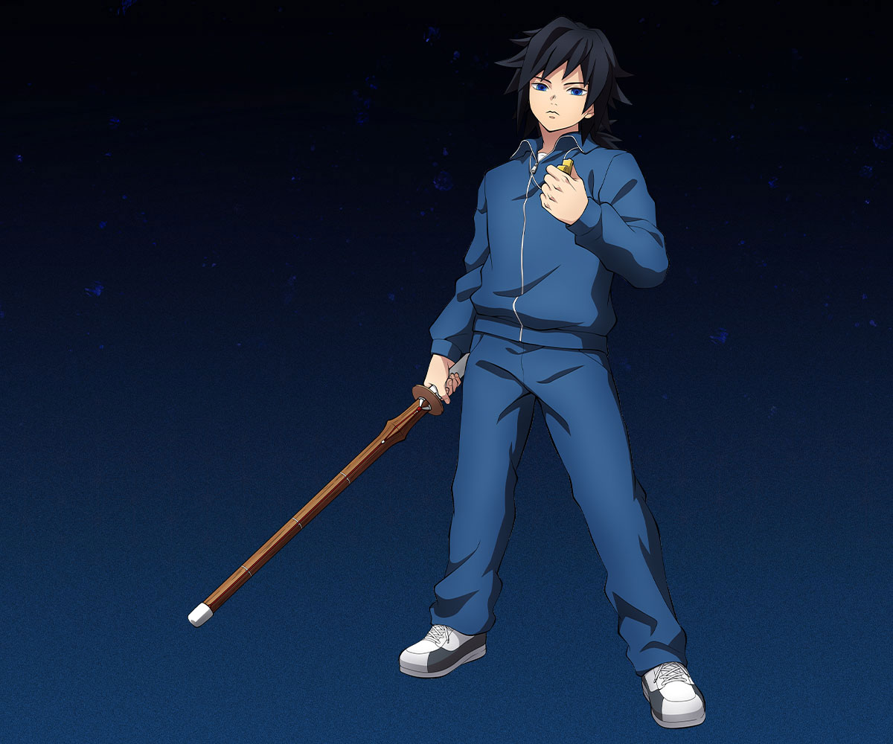
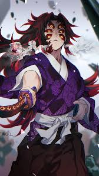

TANJIRO KAMADO
A kindhearted boy. He lived a blissful life with his mother and siblings, but his family was attacked by a demon while he was away from home. He joins the Demon Slayer Corps in order to turn his sister Nezuko, who has become a demon, back into a human, as well as to avenge the death of his family by hunting down the demon who killed them. Under the tutelage of Sakonji Urokodaki, Tanjiro learns to wield Water Breathing techniques in his fight against the demon threat.

RENGOKU
His positive and mentor-like gestures, his friendly smiles. He’s kind and outgoing. He has a strong sense of justice and duty in his craft, as seen in the scene when Rengoku initially wanted to kill Tanjirou for breaking the rules of the Corps by harboring a demon, even if its his own sister. But once we get to know him, he’s so friendly. He accepted Nezuko when he saw her loyalty and strength.

Shinobu
A kindhearted Girl Who Is LOved By All . She IS The Strongest Demonslayer Corpse Among Girls. She Is Butterfly Hashira And She Never Gives Up

Muzan
Muzan is cold-hearted, ruthless, intimidating, and exceptionally intelligent. He sees no value in any humans he has encountered and shows little value in his own subordinates.

ZENITSU
Lazy Positive And Very FUnny Character Who Is Able To Make Space In People Heart By His Double Form. He Was Able To BE Sword Man Because Of His GrandFather. He Is Very Fast Like Thunder And Swings Like Lightning

Nezuko
Sister Of Tanjiro Kamado , Nezuko Was Infected And She Became Demon . Although She Is Demon She Is Positive Towards Human Being And She helps Demon SLayer Corps To SLay Demons

Sabito
Sabito was a serious young man who believed that all of his actions should be becoming of a man. He was seen as a ruthless mentor during his time training Tanjiro Kamado, who was always quick to point out his flaws and refused to acknowledge him as a man.

Urokodaki
A Very Professional Mentor Of Tanjiro. The Man Who Showed Tanjiro The Right Way And Taught Him Showrdmanship

Giyu
Water Brathing 11 form Unlocker . One OF The Main Protagonist Of This Anime . He Supports Tanjiro And His Sister Nezuko And HE Was The One WHo Sent Tanjiro And Nezuko To Urokodaki

Kokushibo
Kokushibo. The highest-ranking member of the Twelve Kizuki is bound to boast a ton of power that can destroy even the toughest of foes.
TANJIRO KAMADO
A kindhearted boy. He lived a blissful life with his mother and siblings, but his family was attacked by a demon while he was away from home. He joins the Demon Slayer Corps in order to turn his sister Nezuko, who has become a demon, back into a human, as well as to avenge the death of his family by hunting down the demon who killed them. Under the tutelage of Sakonji Urokodaki, Tanjiro learns to wield Water Breathing techniques in his fight against the demon threat.
TANJIRO KAMADO
A kindhearted boy. He lived a blissful life with his mother and siblings, but his family was attacked by a demon while he was away from home. He joins the Demon Slayer Corps in order to turn his sister Nezuko, who has become a demon, back into a human, as well as to avenge the death of his family by hunting down the demon who killed them. Under the tutelage of Sakonji Urokodaki, Tanjiro learns to wield Water Breathing techniques in his fight against the demon threat.
TANJIRO KAMADO
A kindhearted boy. He lived a blissful life with his mother and siblings, but his family was attacked by a demon while he was away from home. He joins the Demon Slayer Corps in order to turn his sister Nezuko, who has become a demon, back into a human, as well as to avenge the death of his family by hunting down the demon who killed them. Under the tutelage of Sakonji Urokodaki, Tanjiro learns to wield Water Breathing techniques in his fight against the demon threat.
TANJIRO KAMADO
A kindhearted boy. He lived a blissful life with his mother and siblings, but his family was attacked by a demon while he was away from home. He joins the Demon Slayer Corps in order to turn his sister Nezuko, who has become a demon, back into a human, as well as to avenge the death of his family by hunting down the demon who killed them. Under the tutelage of Sakonji Urokodaki, Tanjiro learns to wield Water Breathing techniques in his fight against the demon threat.
TANJIRO KAMADO
A kindhearted boy. He lived a blissful life with his mother and siblings, but his family was attacked by a demon while he was away from home. He joins the Demon Slayer Corps in order to turn his sister Nezuko, who has become a demon, back into a human, as well as to avenge the death of his family by hunting down the demon who killed them. Under the tutelage of Sakonji Urokodaki, Tanjiro learns to wield Water Breathing techniques in his fight against the demon threat.
TANJIRO KAMADO
A kindhearted boy. He lived a blissful life with his mother and siblings, but his family was attacked by a demon while he was away from home. He joins the Demon Slayer Corps in order to turn his sister Nezuko, who has become a demon, back into a human, as well as to avenge the death of his family by hunting down the demon who killed them. Under the tutelage of Sakonji Urokodaki, Tanjiro learns to wield Water Breathing techniques in his fight against the demon threat.
TANJIRO KAMADO
A kindhearted boy. He lived a blissful life with his mother and siblings, but his family was attacked by a demon while he was away from home. He joins the Demon Slayer Corps in order to turn his sister Nezuko, who has become a demon, back into a human, as well as to avenge the death of his family by hunting down the demon who killed them. Under the tutelage of Sakonji Urokodaki, Tanjiro learns to wield Water Breathing techniques in his fight against the demon threat.
TANJIRO KAMADO
A kindhearted boy. He lived a blissful life with his mother and siblings, but his family was attacked by a demon while he was away from home. He joins the Demon Slayer Corps in order to turn his sister Nezuko, who has become a demon, back into a human, as well as to avenge the death of his family by hunting down the demon who killed them. Under the tutelage of Sakonji Urokodaki, Tanjiro learns to wield Water Breathing techniques in his fight against the demon threat.